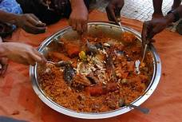

Les céréales et le riz sont la base du repas, auxquels, selon la richesse de la famille, on ajoute des légumes et de la viande de bœuf, de mouton, de poulet, ou, plus rarement, du poisson bouilli. Les mauvaises langues ajouteront l'huile à cette liste : les cuisinières ouest-africaines en usent sans modération ! Les femmes se mettent à plusieurs pour confectionner un plat, ce qui dure généralement la demi-journée, car les recettes en sauce sont bien mijotées. Seules les femmes du plus haut rang dans la concession prennent la responsabilité d'un plat, secondées par leurs filles, même toutes petites, et la bonne. On mange vite, habilement, avec les doigts, seul ou à plusieurs autour d'une bassine, souvent enfermé(s) dans une chambre. Les amis, voisins, étrangers de passage sont toujours servis avec beaucoup d'égards.
Si les restos importants disposent d'une carte élaborée et de moyens de conservation, les restos des petits campements et auberges, quant à eux, n'offrent bien souvent qu'un plat du jour ou préfèrent qu'on commande à l'avance ce que l'on veut manger, ce qui constitue une garantie de fraîcheur. Pour les gargotes, aux prix imbattables, à vous de voir ce que vous vous autorisez en fonction de la tolérance de votre système digestif.
Le plat principal est une variation autour du riz, du couscous ou bachi, ou du tô (même si, désormais, les plats sont souvent accompagnés de frites !)